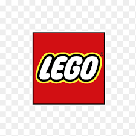

History of Lego
Beginnings 1932
The Lego Group was founded in the carpentry workshop of Ole Kirk Christiansen in Billund, Denmark. In 1916, Christiansen purchased a woodworking shop in Billund, which had been in business since 1895.[3]: 8 With a small staff of apprentices, the shop mostly helped construct houses and furniture. The workshop burned down in 1924 when a fire ignited some wood shavings.[4] Christiansen constructed a larger workshop and worked towards expanding the business even further. When the Great Depression hit, he had fewer customers and had to focus on smaller projects. He began producing miniature versions of his products as design aids. It was these miniature models of stepladders and ironing boards that inspired him to begin producing toys.[5]
The Second World War
Following the Second World War, plastics became available in Denmark, and Lego purchased a plastic injection molding machine in 1947.[3]: 25 One of the first modular toys to be produced was a truck that could be taken apart and reassembled. In 1947, Ole Kirk and Godtfred obtained samples of interlocking plastic bricks produced by the company Kiddicraft. Hilary Fisher Page designed these "Kiddicraft Self-Locking Building Bricks."[8][9] In 1939, Page applied for a patent on hollow plastic cubes with four studs on top (British Patent Nº.529,580) that allowed their positioning atop one another without lateral movement.
Change to plastic bricks 1960
A second warehouse fire struck the Lego Group in 1960, consuming most of the company's inventory of wooden toys. Godtfred decided that the plastic line was strong enough by this time to abandon the production of wooden toys. As a result, Godtfred's brothers Gerhardt (then head of wooden toys) and Karl Georg left the Lego company and began a separate company called "Bilofix." By the end of the year, the Lego Group was employing more than 500 people.[15]
Duplo Systen
n 1969 the Duplo system was introduced. Duplo bricks are much larger than Lego bricks, making them safer for young children, but the two systems are compatible: Lego bricks can be fitted neatly onto Duplo bricks, allowing a seamless transition to the Lego system as children outgrow their Duplo bricks. The name Duplo comes from the Latin word duplus, which translates literally as double, meaning that a Duplo brick is exactly twice the dimension of a Lego building brick (2× height by 2× width by 2× depth = 8× the volume of a brick).
Expanison 1970
During the last three decades of the 20th century, Lego expanded into new areas of toy making and marketing. In 1971 Lego began to target girls by introducing furniture pieces and dollhouses. In 1972 Lego added boat and ship sets, with floating hull pieces, and Godtfred Kirk Christiansen's son, Kjeld Kirk Kristiansen, joined the managerial staff, after earning business degrees in Switzerland and Denmark. One of Kjeld's first achievements with the company was the foundation of manufacturing facilities, as well as a research and development department that would be responsible for keeping the company's manufacturing methods up to date.
Expert Series
In 1975 "Expert Series" sets were introduced, geared towards older, more experienced Lego builders followed by the "Expert Builder" sets in 1977. The technical sets featured moving parts such as gears, differentials, cogs, levers, axles, and universal joints and permitted the construction of realistic models such as automobiles, with functional rack and pinion steering and lifelike engine movements. In 1978 the Lego "mini-figure" was added. The small Lego people had posable arms and legs, and initially a single head with a smiling face. The figure was used in many varieties of Lego sets, allowing the construction of towns populated with the smiling mini-figure Lego citizens. Lego also expanded into space with the creation of Lego Space sets with astronaut mini-figures, rockets, lunar rovers, and spaceships, and into the medieval territory with the Castle theme.
1960
Since the 1960s, educators had seen Lego bricks' productive potential as being an invaluable asset in helping children to develop creativity and problem-solving abilities. Teachers had been using Lego bricks in the classroom for a variety of reasons. In 1980, the Lego Group established the Educational Products Department (eventually renamed Lego Dacta, in 1989), to expand the educational possibilities of their toys. A packing and assembly factory opened in Switzerland, followed by another in Jutland, Denmark, that manufactured Lego tyres.
Decline
ego's profits had declined since 1992. Around 1995 or 1996, according to designer Mark Stafford, the Lego Group retired many LEGO Designers who had created the sets from the late 1970s to the mid-1990s, replacing them with 30 'innovators' who graduated from design colleges around Europe who knew "little specifically about toy design and less about LEGO building". At the time, sets could take over a year to progress from the design stage to store shelves. By 1997, there was a resultant change in the design direction of products, as set details were sacrificed for decreased building times (with fewer pieces) and increased playability features, but this shift drew mixed reception from hardcore Lego fans used to the meticulous construction required of "classic era" sets of the 1980s to mid-1990s. Lego Pirates, which had a strong run since its launch in 1989, was promptly killed off, with 1997 being its last year of production.